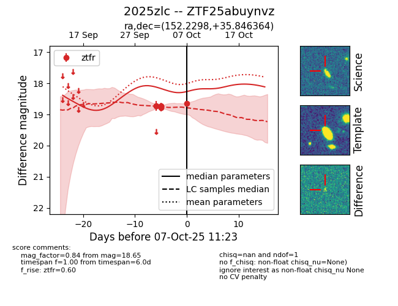
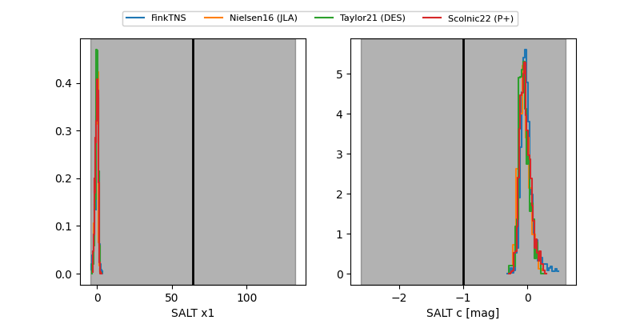

FINK: ZTF25abuynvz
Lasair: ZTF25abuynvz
ALeRCE: ZTF25abuynvz
TNS: 2025zlc
YSE: 2025zlc
ZTF25abuynvz (ztf,fink)
2025zlc (tns,yse)
equatorial (ra, dec) = (152.2298,+35.84636)
galactic (l, b) = (188.4203,+54.54161)


last ztfr=18.65
6 ztfr detections